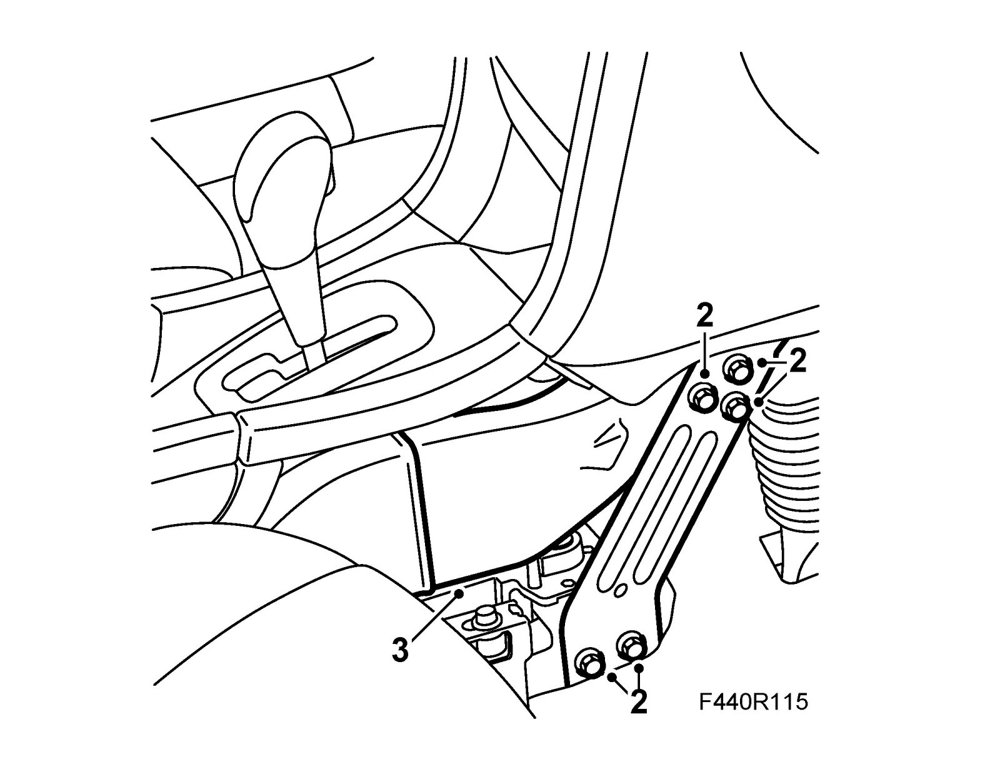
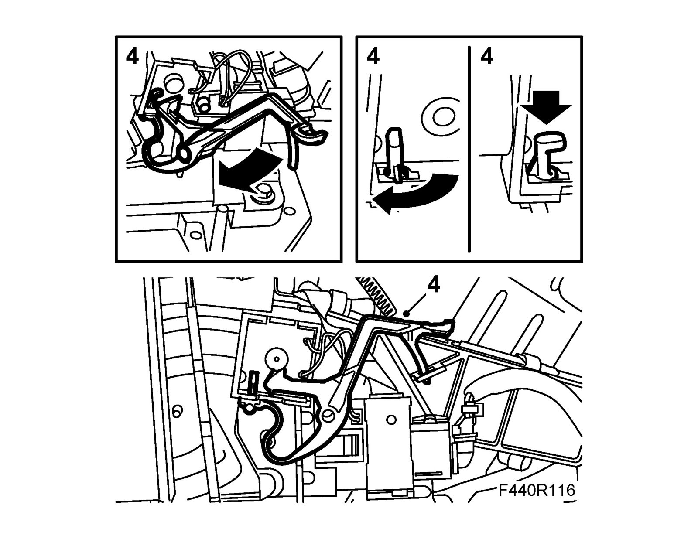
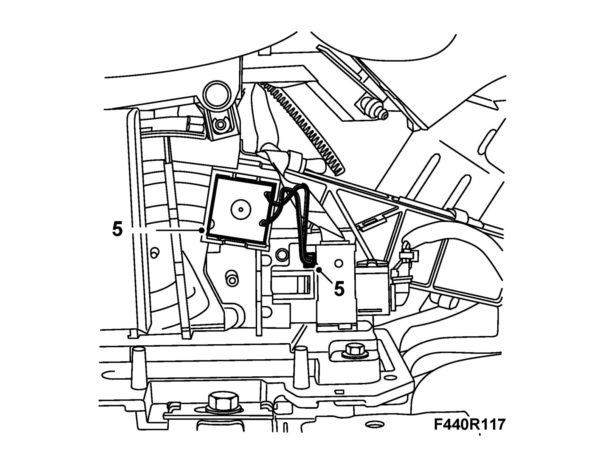
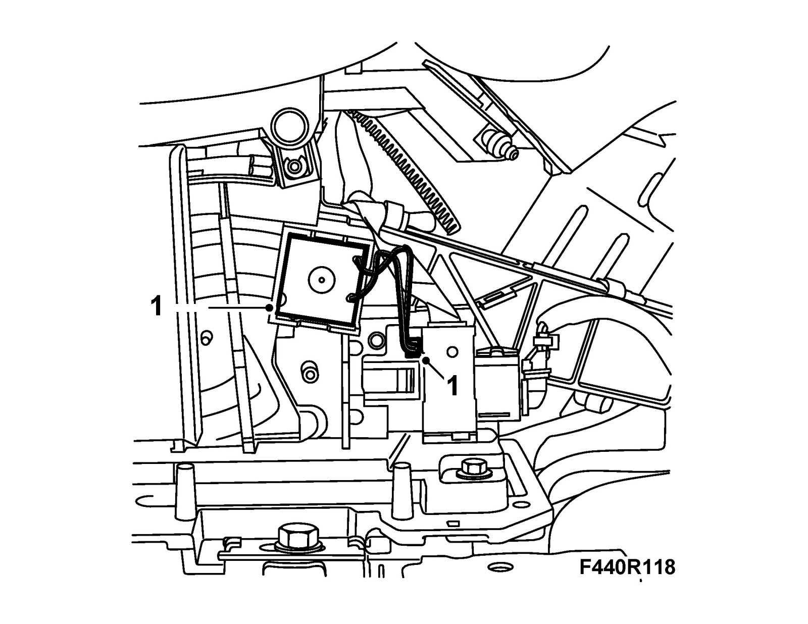
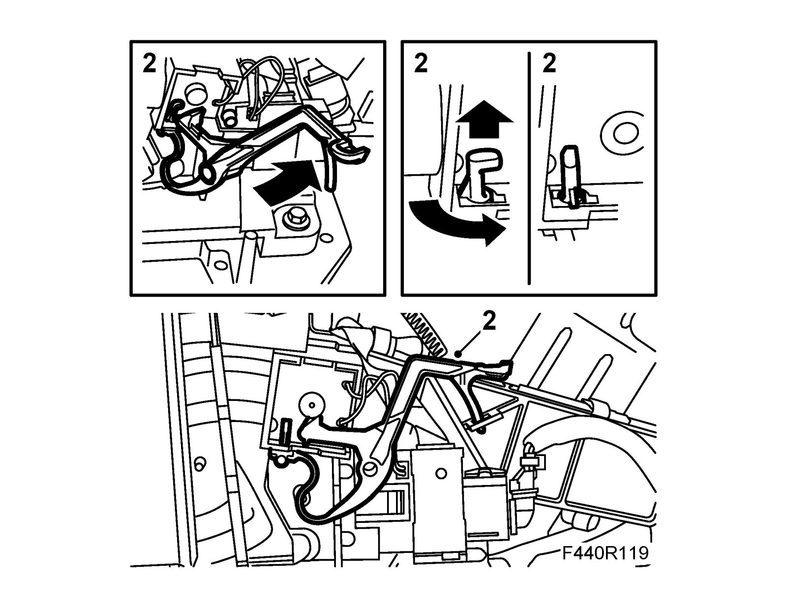
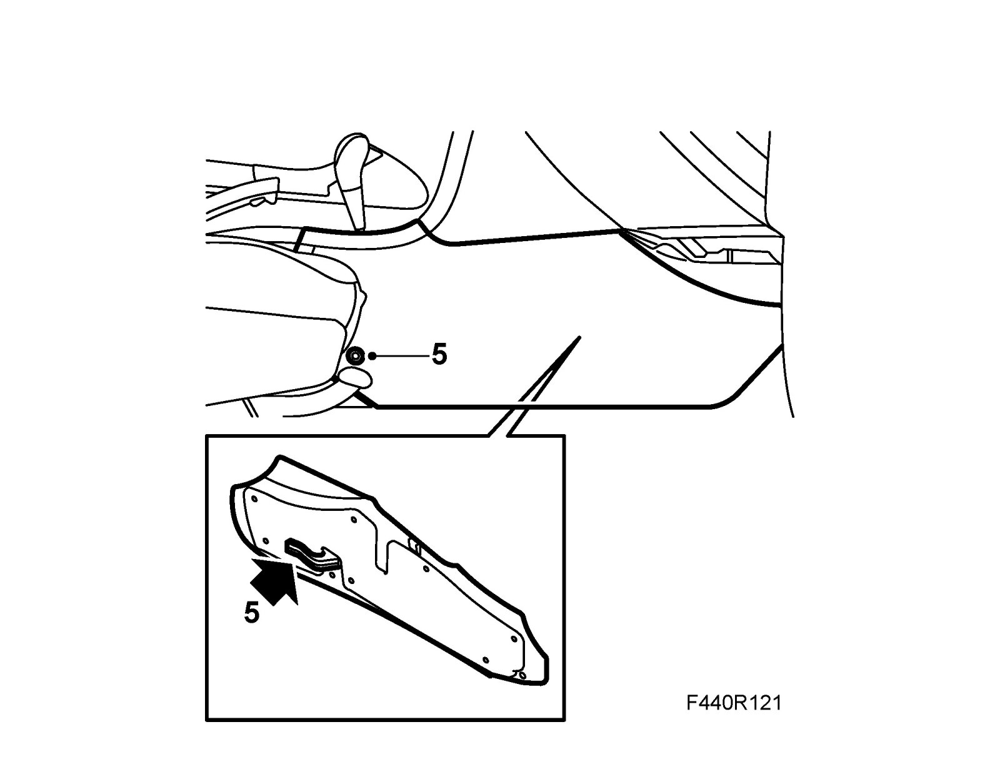

Removal and Replacement
Solenoid, selector lever, SHIFT LOCKTo remove
1. Remove the right side cover from the center console (1 screw)
2. Remove the front stay.

3. Remove the front part of the air duct.
4. Remove the yellow catch lever by pulling out the lever's axle. Turn the lever a quarter of a turn outwards to release the rear part of the lever.

5. Unplug the connector and withdraw the solenoid.

To fit
1. Fit the shift-lock solenoid and plug in the connector.

2. Fit the yellow catch lever.

3. Fit the front part of the air duct.
4. Fit the front stay.
5. Fit the right side cover on the center console.

6. Check the operation.